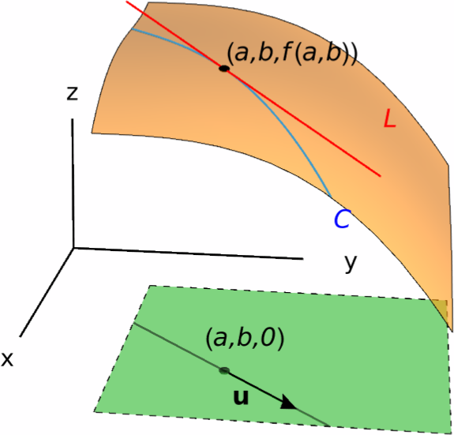

Directional Derivatives
The key difference between studying functions of one variable and studying functions of several variables is the fact that, in $\RR^n$ (where $n\ge 2$), there are infinitely many directions in which we can move from a starting point.
For instance, let us consider a (differentiable) function $z=f(x,y)$ of two variables, and suppose $(a,b)$ lives in the domain of $f$. Then the partial derivatives $f_x(a,b)$ and $f_y(a,b)$ express the rate of change in $f$ when we move either in the $x$-direction (i.e. horizontally) or in the $y$-direction (i.e. vertically). However, we may also be interested in the rate of change of $f$ when we move diagonally.
More specifically, let us write $p=(a,b)$ and consider a unit vector $\bf{u}=\langle u_1,u_2\rangle$. Recall that $\bf{u}$ being a unit vector means that its norm is $\vert\bf{u}\vert=\sqrt{u_1^2+u_2^2}=1$. If we move from $(a,b)$ in the direction of $\bf{u}$, we are describing the straight line \[ c(t)=p+t\bf{u}=(a+tu_1,b+tu_2). \] We are interested in studying the rate of change of $z$ in the direction of $\bf{u}$. This rate of change will be known as the directional derivative of $f$ at $p$ with respect to $\bf{u}$.

Directional Derivatives
Let us start by defining directional derivatives in general:
$\bf{u}=(u_1,\dots,u_n)$ a unit vector—that is, a vector that satisfies \[ \vert u\vert=\sqrt{u_1^2+\cdots+u_n^2}=1. \] The directional derivative of $f$ at $p$ in the direction of $\bf{u}$ is defined as \[ D_{\bf{u}}f(p) = \lim_{h \to 0}\frac{f(p+h\bf{u})-f(p)}{h}, \] provided that the limit exists.
In general, how can we compute the directional derivatives of $f$? It turns out that, once we know the partial derivatives of $f$, we can easily compute all its directional derivatives:
Proof.
To make the argument easier, we will suppose that $n=2$, that is, that $f$ is a function of two variables. The general case is tackled in the same way.
Let $z=f(x,y)$ be a function of two variables, $p=(a,b)$ a point in its domain and $\bf{u}=\langle u_1,u_2\rangle$ a unit vector. We define the function \[ h(t)=f(p+t\bf{u})=f(a+tu_1,b+tu_2). \] On the one hand, the derivative $h'(0)$ is \[ h'(0)=\lim_{t \to 0} \frac{f(p+t\bf{u})-f(p)}{t}=D_\bf{u}f(p). \] On the other hand, the chain rule allows us to compute $h'(0)$ as \[ h'(0) = \frac{d}{dt}\Bigg\vert_{t=0}(a+tu_1) \frac{\partial f}{\partial x}(a,b) + \frac{d}{dt}\Bigg\vert_{t=0}(b+tu_2) \frac{\partial f}{\partial y}(a,b) = u_1 \frac{\partial f}{\partial x}(a,b) + u_2 \frac{\partial f}{\partial y}(a,b). \] This proves the formula.
Solution.
Note that the vector $\bf{u}$ in question is \[ \bf{u}=\bigg\langle\cos \frac{\pi}{3},\sin\frac{\pi}{3}\bigg\rangle = \bigg\langle \frac{1}{2},\frac{\sqrt{3}}{2}\bigg\rangle. \] Therefore, using the formula for the directional derivative, we obtain \[ D_{\bf{u}}f(x,y) = \frac{1}{2}\frac{\partial f}{\partial x} + \frac{\sqrt{3}}{2}\frac{\partial f}{\partial y} = \frac{1}{2}(3x^2-2y^2)+\frac{\sqrt{3}}{2}(3y^2-4xy). \] Now, if we plug in $(x,y)=(2,-2)$, we obtain \[ D_{\bf{u}}f(2,-2)=\frac{1}{2}(12-8)+\frac{\sqrt{3}}{2}(12+16) =2+14\sqrt{3}. \]
The Gradient Vector
Let us examine for a moment the formula for the directional derivative.
If $f$ is a differentiable function of the variables
$x_1,\,\dots,\,x_n$,
$p=(a_1,\dots,a_n)$ is a point in $\dom(f)$ and
$\bf{u}=\langle u_1,\dots,u_n\rangle$ is a unit vector, then
\[
D_{\bf{u}}f(p)
=
u_1 f_{x_1}(p)
+\cdots+
u_n f_{x_n}(p).
\]
We can actually recognize the above formula as a dot product:
let us define the vector
\[
\nabla f(p)
=
\langle f_{x_1}(p),\dots,f_{x_n}(p)\rangle.
\]
Then, the directional derivative becomes
\[
D_{\bf{u}}f(p)=\nabla f(p)\cdot \bf{u}.
\]
This motivates the following defintion:
Now, the preceding discussion can be summarized in the following result:
Solution.
One sees that the partial derivatives of $g$ are given by \[ \frac{\partial g}{\partial x}=\frac{2 x (x+z)+6 y^2}{(2 x+z)^2},\qquad \frac{\partial g}{\partial y}=-\frac{6 y}{2 x+z},\qquad \frac{\partial g}{\partial z}=\frac{3y^2-x^2}{(2 x+z)^2}. \] Thus, the gradient vector of $g$ is \[ \nabla g(x,y,z) = \Bigg\langle \frac{2 x (x+z)+6 y^2}{(2 x+z)^2}, -\frac{6 y}{2 x+z}, \frac{3 y^2-x^2}{(2 x+z)^2} \Bigg\rangle. \]
We now compute the requested directional derivative. Note that in this case $\vert\bf{u}\vert=\sqrt{6}$, so the unit vector in the direction of $\bf{u}$ is actually $\bf{v}=\tfrac{1}{\sqrt{6}}\langle 1,2,1\rangle$. In addition, since $p=(1,1,-1)$, we obtain \[ \nabla g(p)=\langle 6,-6,2\rangle. \] Thus, the directional derivative of $g$ at $p$ in the direction of $\bf{u}$ is \[ D_{\bf{v}}g(p)=\nabla g(p)\cdot\bf{v}=\frac{1}{\sqrt{6}}\langle 6,-6,2\rangle \cdot\langle 1,2,1\rangle=-\frac{4}{\sqrt{6}}. \]
The Gradient Maximizes the Directional Derivative
Suppose $f$ is a function of $n$ variables and $p$ is a point in $\dom (f)$ such that $f$ is differentiable at $p$. One question that we could ask ourselves is the following: which is the direction $\bf{u}$ in which we have to move from $p$ in order to ensure that the directional derivative $D_{\bf{u}}f(p)$ is the maximum possible? Fortunately, the answer to this question is quite straightforward:
- The maximum value of the directional derivative $D_{\bf{u}}f(p)$ is equal to $\vert \nabla f(x)\vert$.
- This maximum value is achieved when $\bf{u}$ has the same direction as $\nabla f(p)$. In other words, if $\bf{u}=\tfrac{\nabla f(p)}{\vert\nabla f(p)\vert}$, then \[ D_{\bf{u}}f(p)=\vert\nabla f(p)\vert. \]
Solution.
Recall that the gradient of $g$ is \[ \nabla g(x,y,z) = \Bigg\langle \frac{2 x (x+z)+6 y^2}{(2 x+z)^2}, -\frac{6 y}{2 x+z}, \frac{3 y^2-x^2}{(2 x+z)^2} \Bigg\rangle. \] At $q=(1,1,-1)$, this gradient becomes \[ \nabla g(q)=\langle 6,-6,2\rangle. \] Therefore, the rate of change of $g$ is maximized when we follow the direction of $\nabla g(q)=\langle 6,-6,2\rangle$. This rate of change is equal to $\vert\nabla g(q)\vert=\sqrt{74}$.
The Gradient Vector is Perpendicular to Level Sets
Here we establish an imporant geometric fact that relates the gradient vector of a function with its level sets. Recall that if $f$ is a function of $n$ variables, then the level sets of $f$ are the sets given by equations of the form \[ f(x_1,\dots,x_n)=k, \] where $k$ is any real constant. Let us denote by $S$ a level set of $f$, and consider a point $p$ in $S$.
Let us assume that $f$ is differentiable, and take any (differentiable) curve $c(t)=(x_1(t),\dots,x_n(t))$ contained in $S$ and such that $c(0)=p$. Since $c(t)$ is contained in $S$, we have \[ f(x_1(t),\dots,x_n(t))=k. \] If we differentiate the above equation with respect to $t$ at $t=0$, then the chain rule gives \[ x_1'(0)\frac{\partial f}{\partial x_1}(p) +\cdots+ x_n'(0)\frac{\partial f}{\partial x_n}(p)=0. \] We can rewrite the above equation as \[ \langle x_1'(0),\dots,x_n'(0)\rangle \cdot \nabla f(p)=0. \] This means that the gradient vector $\nabla f(p)$ is perpendicular to the level set of $f$ that contains $p$. In conclusion:
The above result can be used to compute tangent lines of level curves, as well as tangent planes to level surfaces.
Solution.
Consider the function \[ F(x,y)=-\frac{e^x}{5}-x+y^2-\frac{3}{5}. \] Then the curve $C$ is precisely the level curve corresponding to $k=0$. Now, the gradient of $F$ is \[ \nabla F = \Big\langle -\frac{e^x}{5}-1,2y \Big\rangle, \] so at $p$ we have \[ \nabla F(p)=\nabla F\Big(0,\frac{2}{\sqrt{5}}\Big)=\Big\langle-\frac65,\frac{4}{\sqrt{5}} \Big\rangle. \] Therefore, the tangent line of $C$ at $p$ is the only line that contains $p$ and is perpendicular to $\big\langle-\tfrac65,\tfrac{4}{\sqrt{5}}\big\rangle$. The equation of this line is \[ -\frac65(x-0)+\frac{4}{\sqrt{5}}\Big(y-\frac{2}{\sqrt{5}}\Big)=0. \] After simplifying, we see that the tangent line of $C$ at $p$ has equation \[ -\frac65 x+\frac{4}{\sqrt{5}}y-\frac85=0. \]
Solution.
Consider the function \[ G(x,y,z)=x^2+\frac{y^2}{4}+\frac{z^2}{16}-6. \] This function is differentiable, and $S$ is precisely the level surface of $G$ for the value $k=0$.
The gradient of $G$ is \[ \nabla G(x,y,z) = \Big\langle 2x,\frac{y}{2},\frac{z}{8} \Big\rangle. \] Setting $x=2$, $y=2$ and $z=4$ we obtain \[ \nabla G(2,2,4) = \Big\langle 4,1,\frac12\Big\rangle. \] Thus, the tangent plane of $S$ at $p$ is the only plane that contains $p=(2,2,4)$ and that is perpendicular to $\nabla G(p)=\big\langle 4,1,\tfrac12\big\rangle$. The equation for this plane is \[ 4(x-2)+1(y-2)+\frac12(z-4)=0, \] which, after simplifying, becomes \[ 4x+y+\frac12 z=12. \]